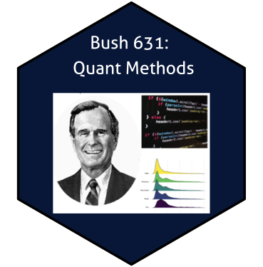

Bush 631 - Quantitative Methods
Fall 2022
Syllabus - the web version (click tabs for more details on each section)

Class Hours: Tuesday 04:30-07:20 p.m.
Classroom: Allen 1003
Office Hours: Tuesday & Thursday 9:30-11:00 a.m.
Office: Allen 3029 (3rd floor)
Communication
The best place to ask questions is in the classroom. If your question is not related to class material or relevant to other students, we can discuss it after class. Outside the classroom, there are two ways to get in touch:
- Office Hours: I encourage you to visit my office hours to discuss any difficulties with the course. I recommend watching this Video (link) - it is both fun and offers some pointers on office hours. I am available to meet outside of office hours, but you must contact me in advance so we can schedule a time that works for both of us.
- Email: you can always email me with any concern you have (class-related or not). You can expect me to reply to emails within 24 hours during the work week. I will not reply to emails on the weekend, except for urgent matters. If the situation requires it, we can set-up a Zoom meeting and discuss the matter instead of via email. As with all business related correspondence, please include an appropriate salutation, identify yourself, and write in complete sentences.
Dr. Rotem Dvir
Email: rdvir@tamu.edu
PhD. TAMU Political Science (2021).
Assistant Research Scientist (Institute for Science Technology and Public Policy, Bush School)
Good memories from a long time ago:
White Heaven Beach in Australia 
Mt. Cook in New Zeland
This is a graduate course in quantitative social science research methods. We will learn about various methods to design a research and use quantitative data to tackle a variety of questions in politics as a whole, and international affairs in particular. For example, how to predict election outcomes? What factors drive the onset of wars? What is the likelihood of a successful sanctions regime? Which type of leaders are more prone to concede in disputes? and how public opinion shape the decision to enter negotiations? You will obtain knowledge that is useful beyond academia. Many private companies and non-profits have invested heavily in data science techniques to learn about their users, platforms, markets, and programs. Data scientists at these institutions are essentially applied social scientists and employ many of the same techniques you will learn in this course.
This course will cover the tools and techniques of quality research design and the introductory statistical skills that are designed to give you an understanding of the appropriate uses (and mis-uses) of quantitative research tools. The goal is to provide you with the capability to understand, explain, and perform social science research, with a special focus on data analysis and causal reasoning. You will be able to read and understand how quantitative research methods are used in the social sciences. In addition, you will have a foot in the door of the data science world - this course will help you become proficient in the use of statistical software to manage and analyze data. The skills of collecting and analyzing data in a sophisticated manner has become crucial for the modern job market across industries. Finally, you will obtain data literacy that will help you become a critical consumer of evidence and information.
Course Objectives
Identify, understand and assess research designs, and their fit to the study of research questions in social sciences and international affairs.
Discuss methods of data collection (designing surveys and survey questions, determining sampling and sample size, etc.)
Develop data analysis skills including data management, exploration using descriptive statistics, generating and testing hypotheses using basic inferential statistics (by applying bivariate and multivariate models), as well as visualizing important findings.
Develop analytic skills to assess research designs that help understand events and processes in international affairs. Identify problems in applying quantitative data in the public realm.
Prepare written products for relevant professional audiences. Specifically, students will learn how to prepare written products such as executive summaries or reports, as well as visual presentations of their work.
Required Readings
Book: Kosuke Imai. (2017). Quantitative Social Science: An Introduction.
The book is available in the Texas A&M bookstore. You will need a copy of the book, otherwise it will be nearly impossible to pass the class. The book is comparatively affordable. Small number of copies of the book are available at the TAMU Evans and PSEL libraries.
Reading assignments for each week of class are listed in the Course Schedule section of this syllabus. Reading assignments should be completed prior to the relevant meeting. Additional reading material is available through Internet links. Please note that some materials can only be accessed on computers connected to the University’s network.
Course Material Copyright: The handouts used in this course are copyrighted. By “Handouts,” I mean all materials generated for this class, which includes but are not limited to syllabi, slides, and tasks. Because these items are copyrighted, you do not have the right to copy handouts (or place them online), unless I expressly grant permission, which I have not. You do not have the right to electronically record (audio and/or video) any part of this class without the express, written consent of the instructor. You also do not have the right to post recordings of any portion of the class online or to distribute by other means.
Attendance and Participation
Class attendance will count for five (5) percent of your final grade. I expect you to actively participate in class discussions, ask questions, listen to your fellow students, and be attentive. Learning research methods is much easier when done in concert with others.
You are allowed to have one free unexcused absence from class. After one unexcused absence, I will deduct one point from the 5 possible attendance points for each unexcused absence. Excused absences are not deducted from your grade. I will decide what counts as excused on a case-by-case basis, but in general absences will only be excused for good reasons. You must contact me before missing class. If you have more than six (6) unexcused absences, you will receive an F in the course.
If you do have any problems that do not allow you to perform well in class, please email me ASAP. I am willing to work with you, but this is only possible if you come talk to me early enough.
Grading Policies
Your grade for this course consists of the following:
(1) Attendance (5%): as detailed in the section above.
(2) Home (Swirl) assignments (10%): Short assignments that must be completed before the relevant class. These assignments are directly based on the textbook and are designed to check whether you understood the materials covered in the textbook. You will receive a pass for the respective exercise as long as you attempt all questions. As proof, you will save a screenshot of the log at the end and submit it before the start of the class in which it is due.
(3) Research Design task - using R (10%): In this task, you will use your knowledge of R software to analyze data provided by me. More details will be provided in class. Assignment due October xx, 2022.
(4) Research Design and programming - class assignments (10%): You will complete a set of four (4) class tasks in which you will practice basic programming with R, and work with your collegues to design research frameworks.
(5) Final project - proposal (10%): In groups of maximum 2 students, you will prepare a project that explores a topic of interest in international affairs. Based on data provided by me, you will analyze a global phenomenon and study its implications for policy. The first component of the project is a research proposal in which you discuss your selected topic, the plan for studying it, potential sources and final visual product. Proposal is due .
(6) Final project - data report (20%): Based on the topic and data selected for the final project, you will prepare a report that focuses on the data. You will be asked to describe the data, justify using it for your research project and conduct a preliminary analysis. More details will be provided in class. Assignment due .
(7) Final project - Infographic/Poster (20%): The main component of the final project includes preparing a visual display of your study. You will prepare an inforgraphic in which you present the topic and research question, as well as selected important findings and implications for policy. Presentations of your work would take place on .
(8) Final project - Executive summary (15%): The last component of the final project includes preparing an executive summary of your work. The report is intended to expand the information presented in your inforgraphic, and provide additional details on the topic for any consumer who may be interested. The executive summary document must be submitted along with the inforgraphic and is due on .
Grading Scale
Letter grades will be assigned as follows: all grades will be final and will not be changed unless the instructor has made a miscalculation.
A: \(\geq 89.5\)
B: \(\geq 79.5 - < 89.5\)
C: \(\geq 69.5 - < 79.5\)
D: \(\geq 59.5 - < 69.5\)
F: \(< 59.5\)
Make-up Policy
Students will be allowed (in most cases, see Student Rule 7) to make-up tasks, provided that they email me within 24 hours of their absence. In addition, they must show original evidence of a university-excused absence or a letter from their dean explaining their absence (Please note that I do not accept Xeroxed copies of medical excuses from students). For instructions on how to obtain a letter from your dean regarding your excused absence, refer to Student Rule 7.2: “The associate dean for undergraduate programs, or the dean’s designee, of the student’s college may provide a letter for the student to take to the instructor stating that the dean has verified the student’s absence as excused” Student Rule 7.
Changes to Syllabus: I reserve the right to update/modify/clarify the syllabus with advance notification (QSS below refers to textbook).
Week 1
Tuesday, August 30, 2022: Introduction
Required Reading: QSS, Chapter 1 (pp. 1-31).
What’s the plan?:
- Course procedures, Canvas, Course website, office hours.
- Introduction to R: download R and RStudio to your machine (instructions will be sent before class).
Week 2
Tuesday, September 6, 2022: Causality vol. I
Required Reading: QSS, Chapter 2 (pp. 32-54, sections 2.1-2.4).
Recommended Reading: Mattes, Michaela and Jessica Weeks (2019). “Hawks, Doves, and Peace: An Experimental Approach” American Journal of Political Science, 63 (1), pp. 53-66. (Article Link)
What’s the plan?:
- The concept of causality in social science research, causal effects and counterfactuals.
- Randomized experiments (RCTs).
- R work: looking at our data, cross-tabs, relational operators, sub-setting data, factor variables.
Students with Disabilities
The Americans with Disabilities Act (ADA) is a federal anti-discrimination statute that provides comprehensive civil rights protection for persons with disabilities. Among other things, this legislation requires that all students with disabilities be guaranteed a learning environment that provides for reasonable accommodation of their disabilities. If you believe you have a disability requiring an accommodation, please contact Disability Services, currently located in the Disability Services building at the Student Services at White Creek complex on west campus or call 979-845-1637. For additional information visit http://disability.tamu.edu.
Academic Dishonesty/Plagiarism statement
As commonly defined, plagiarism consists of passing off as one’s own the ideas, words, writings, etc., which belong to another. In accordance with the definition, you are committing plagiarism if you copy the work of another person and turn it in as your own, even if you should have the permission of the person. Plagiarism is one of the worst academic sins, for the plagiarist destroys the trust among colleagues without which research cannot be safely communicated. If you have any questions regarding plagiarism or any other form of academic misconduct, please consult the Aggie Honor System Office website http://www.tamu.edu/aggiehonor or the latest version of the Texas A&M University Student Rules, under the section “Scholastic Dishonesty.” http://rules.tamu.edu. Always remember:Diversity, equity and inclusion statement
The Department of International Affairs is committed to fostering a diverse, equitable, and inclusive learning environment for all students, staff, and faculty. We welcome individuals of all ages, backgrounds, citizenships, disabilities, ethnicities, family statuses, genders, gender identities, geographical locations, languages, military experiences, political views, races, religions, sexual orientations, socioeconomic statuses, and/or work experiences see, http://diversity.tamu.edu/. We recognize a special responsibility to undertake particular efforts to include the participation and voices of those from historically underrepresented groups. In all of this, diversity alone is not the only goal; we also strive to hear, listen to, and incorporate new voices in our teaching, research, and service. We hold that embracing and supporting new perspectives, individuals, and ideas invigorates academic excellence and pushes our entire community forward. The Department of International Affairs and the Bush School expect everyone to demonstrate respect for different experiences, beliefs and values expressed by other members of our community and to engage in reasoned discussions. As a department of international affairs, within a university dedicated to the public good, a commitment to diversity, equity, and inclusion is critical for preparing and ensuring the success of the next generation of leaders.
Title IX Statement on Limits to Confidentiality
Texas A&M University is committed to fostering a learning environment that is safe and productive for all. University policies and federal and state laws provide guidance for achieving such an environment. Although class materials are generally considered confidential pursuant to student record policies and laws, University employees - including instructors - cannot maintain confidentiality when it conflicts with their responsibility to report certain issues that jeopardize the health and safety of our community. As the instructor, I must report (per Texas A&M System Regulation 08.01.01) the following information to other University offices if you share it with me, even if you do not want the disclosed information to be shared: Allegations of sexual assault, sexual discrimination, or sexual harassment when they involve TAMU students, faculty, or staff, or third parties visiting campus.
These reports may trigger contact from a campus official who will want to talk with you about the incident that you have shared. In many cases, it will be your decision whether or not you wish to speak with that individual. If you would like to talk about these events in a more confidential setting, you are encouraged to make an appointment with the Student Counseling Service https://scs.tamu.edu/. Students and faculty can report non-emergency behavior that causes them to be concerned at http://tellsomebody.tamu.edu.
COVID-19 Statement
To help protect Aggieland and stop the spread of COVID-19, Texas A&M University urges students to be vaccinated and to wear masks in classrooms and all other academic facilities on campus, including labs. Doing so exemplifies the Aggie Core Values of respect, leadership, integrity, and selfless service by putting community concerns above individual preferences. COVID-19 vaccines and masking — regardless of vaccination status — have been shown to be safe and effective at reducing spread to others, infection, hospitalization, and death.
Less official pandemic stuff
Texas A&M University does not have a mask or vaccination mandate, but as the previous statement mentions, it is highly recommended.
I will be wearing a mask in class (and I am fully vaccinated). Following CDC guidlines, I strongly recommend/urge/encourage you to wear a mask in class regardless of your vaccination status. I will place a box of disposable masks by the door if you would like one.
Again, Texas A&M University does not require either vaccines or masks, and if you are not vaccinated or do not wear a mask, there are no penalties.